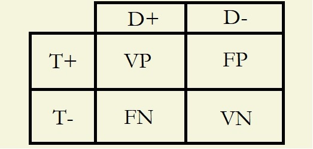

estes diagnósticos, assim como o martelo para o pedreiro ou a roda para o oleiro, são os instrumentos indispensáveis da prática médica, haja vista sua capacidade de triar indivíduos quanto a certo acometimento de forma melhor que o acaso.
Isso quer dizer que utilizando-se testes diagnósticos conseguimos distinguir indivíduos saudáveis e doentes de forma mais precisa do que se utilizássemos uma moeda no "cara ou coroa". A taxa de acertos de um teste diagnóstico, como veremos mais adiante, é a chamada acurácia.
Testes diagnósticos trabalham com magnitudes, ou seja, necessitam de algo quantificável para que possam formular um resultado, quer positivo ou negativo; e. g. o teste para identificarmos o diabetes utiliza como parâmetro a glicemia, já o teste para identificarmos a Doença de Huntington utiliza como parâmetro o número de repetições CAG. Perceba que esses dois parâmetros são numéricos (podem ser representados por números), não qualitativos. Isso é o que os permite serem utilizados em testes diagnósticos. Exercite essa ideia a seguir:
Dos parâmetros abaixo, quais são quantitativos e quais são qualitativos?
Etnia
Idade
γ-GT (ou GGT)
Sexo
Mais um questionamento antes de prossguirmos. Reflita:
Imagine que um teste extremamente ruim seja inventado; um teste consideravelmente pior que o acaso (cara ou coroa). Pessoas saudáveis são apontadas como doentes e doentes são apontadas como saudáveis. Uma pessoa com conhecimento profundo de lógica e matemática, e que sabe que o teste é extremamente ruim, poderia tirar algum proveito dele?
Correto!
Correto!
Correto!
Correto!
NÃO! A etnia de uma pessoa não pode ser representada por um número. As possibilidades são todas qualitativas; e. g. caucasiano, negro, oriental, pardo & c.
NÃO! Conseguimos representar a idade de uma pessoa apenas através de números; e. g. 14 anos, 44 anos & c.
NÃO! O gama GT é uma dosagem apresentada numericamente, geralmente na unidade massa atômica (U) por litro (L) e. g. 28 U/L & c.
NÃO! O sexo de um indivíduo não pode ser representado por um número. Há apenas duas opções: masculino e feminino.
Errado. Testes que acertam quase sempre ou que erram quase sempre são igualmente úteis. Como? O teste que acerta quase sempre irá identificar corretamente doentes e não doentes. Já o teste que quase sempre erra, por sua vez, será útil da mesma forma se invertermos seu resultado. Pense comigo: se o teste do enunciado quse sempre erra, então uma pessoa apontada por ele como "doente" tem grande chances de estar saudável e vice-versa.
Correto! Como? Um teste que quase sempre erra torna-se tão útil quanto um teste que quase sempre acerta ao invertermos seus resultados. Se o teste do enunciado apontou alguém como "doente", basta invertermos o resultado, uma vez que ele quase sempre erra: isto é, a pessoa muito provavelmente está saudável. Dessa forma, pode-se inferir o seguinte: uma acurácia próxima de 0% é tão útil, quando conhecida, quanto uma próxima de 100%.
Os resultados de um teste diagnóstico podem enquadrar-se em quatro possibilidades apenas:
Indivíduo doente apontado como doente pelo teste; chamado de Verdadeiro Positivo (VP);
Indivíduo saudável apontado como saudável pelo teste; chamado de Verdadeiro Negativo (VN);
Indivíduo doente apontado como saudável pelo teste; chamado de Falso Negativo (FN);
Indivíduo saudável apontado como doente pelo teste; chamado de Falso Positivo (FP).
Acostume-se com esses quatro termos; serão essenciais daqui adiante!
Obviamente, ao criarem-se testes diagnósticos, procura-se reduzir ao máximo o número de resultados falsos negativos (FN) e falsos positivos (FP). Ambos causam transtornos muitas vezes sérios, mas por motivos diferentes: Falsos negativos, i. e. pessoas que têm a doença porém são apontadas como não as possuindo, podem carecer de tratamento precoce, o que em certas doenças levam a prognósticos indesejados. Já pessoas com resultados falsos positivos, i. e. pessoas que não possuem a doença porém são apontadas como enfermas, podem ser submetidas a tratamentos e intervenções desnecessárias, as quais por sua vez vêm com seus próprios riscos, como as intervenções cirúrgicas, por exemplo.
Abaixo está uma tabela 2x2 construída de sorte a representar essas possibilidades. Acostume-se com ela também!
 Legenda:T+, Teste Positivado; T-, Teste Negativado; D+, Indivíduo Doente; D-, Indivíduo Saudável; VP, Verdadeiro Positivo; FN, Falso Negativo; FP, Falso Positivo; VN, Verdadeiro Negativo.